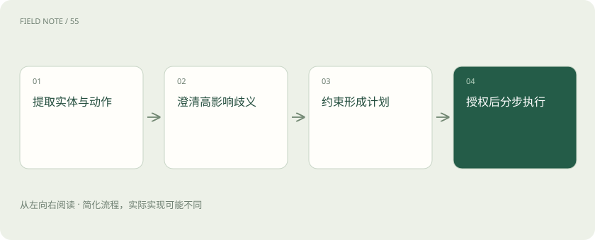
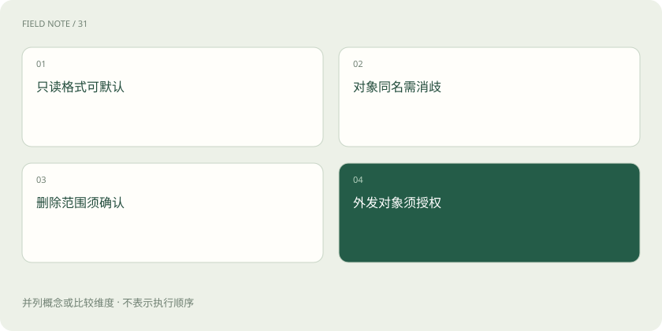
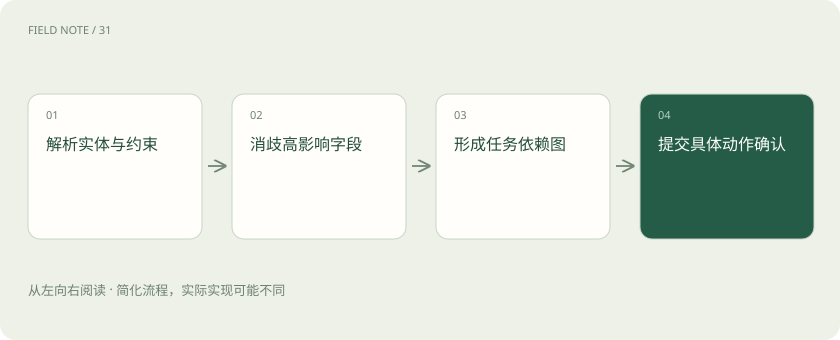

先读哪些知识
先用一个类比理解
类比只帮助建立直觉，不等同于技术的完整机制。
一图看懂

意图不只是分类标签
把“帮我处理一下华东客户”标成客户管理，还不足以执行。系统需要实体、动作、范围、时间、输出和约束：是哪几个客户，处理指分析、更新还是联系，面向谁交付。模型可以提出候选解释，但应把确认事实和推测分开，不能用一句自信的自然语言总结代替任务契约。
实体抽取也可能存在歧义，同名公司、别名和集团子公司需要映射到唯一记录。对高影响操作，系统应展示识别结果供核对，避免语言理解正确却操作错对象。
一个企业歧义案例
经理说“把上季度重点客户整理好，发给相关人”。上季度可能指自然季度或公司财季；重点可能按营收或战略名单；相关人可能包含外部伙伴。这些歧义影响对象和外发风险。系统可以先查询有权读取的日历口径与客户标签，形成候选清单，但发送对象与交付动作仍需要明确授权。
在这个案例里，可以先准备两种期间口径的覆盖差异，让经理更容易作决定。澄清应展示实际影响，而不是只抛出术语，让用户承担全部解释成本。
约束要成为结构化条件
将任务表示为客户范围、期间、指标口径、接收人、输出格式和允许动作等字段，能让计划与验收共享同一依据。未知字段保留未知，而非静默填默认值。对于可逆的格式选择可采用合理默认；对于收件人、删除范围或金额变更，错误代价高，应在执行依赖步骤前澄清。
约束之间还可能冲突，例如既要求覆盖全体客户又只授权部分区域。系统应显式提出范围矛盾，并在权限允许的子集内继续，不应把任务目标当成越权依据。
图解：高影响歧义的风险判断

澄清应针对会改变路径的信息
好的澄清不是把所有字段逐项问遍，而是询问哪些答案会改变范围、风险或交付。若客户名单已经存在，先读取名单即可；若“整理”既可能意味着分析又可能意味着改写 CRM，应确认动作含义。系统可以继续完成独立的只读工作，同时避免启动依赖未定答案的写入步骤。
澄清后的答案应写回任务状态，避免后续轮次重新猜测。若用户只确认期间而未确认收件人，状态中应继续保留收件人未知，而不是把一次回复解释成全部确认。
风险路由先于操作
同一意图可分为只读汇总、草稿生成和正式发送三个风险阶段。路由依据业务动作、对象敏感度及权限，而非用户语气是否坚定。查询无权限客户时应收缩范围或说明缺口，不能通过另一个工具绕过限制。授权是具体动作和资源的组合，不是一次确认后所有未来步骤均放行。
风险还随数据组合改变：单项公开字段可能无敏感性，合并客户名单与报价后却需要更严格的访问控制。路由规则应考虑输出内容，而非只看工具名称。
计划可表示为依赖图
先解析名单与时间口径，然后并行读取成交记录和服务事件，再合并、校验、生成草稿，最后等待审核。节点之间的箭头表示数据依赖；没有依赖的节点才可并行。某个来源缺失时，标记受影响指标，保留其他可完成分支。依赖图让暂停位置与重跑范围更清楚，减少整条链重复执行。
依赖图不要求用户理解图论。可以呈现“先完成哪些条件，接下来可以做什么”的清单，并在失败时解释被阻塞的交付项，让业务方能够调整目标。
工具选择需要多重验证
模型可依据工具说明与输入输出 schema 提出候选调用；系统还必须验证必填字段、类型、枚举、实体标识和权限。客户名称不能直接当作唯一 ID，应该先消歧再查询。工具返回空列表也可能是筛选口径错误，应区分没有数据与查询失败，不能让“模型选择了工具”成为结果正确的证明。
参数校验能发现格式问题，但不能单独证明业务含义正确。日期符合格式仍可能选错季度，所以需要把语义约束、权限检查和接口 schema 分别负责。
图解：从模糊请求到可执行计划的关键检查

确认面向具体可审阅产物
发送前呈现准确收件人、报告版本、附件清单与内容摘要，并说明将产生的外部效果。用户确认后，如果收件人或附件变化，应重新判断授权是否覆盖。完成标准也要明确：草稿已生成、审核已通过、发送请求已接受和对方收到是不同状态，系统不能用最后一句“已处理”掩盖这些差异。
确认记录应关联任务、时间与产物摘要，便于后续解释授权覆盖范围。若用户取消任务，待执行动作应被撤销，不能因为旧计划已排队就继续提交。
放在一起对比
| 责任环节 | 具体判断依据 | 对应处置 |
|---|---|---|
| 一个企业歧义案例 | 经理说“把上季度重点客户整理好，发给相关人” | 上季度可能指自然季度或公司财季；重点可能按营收或战略名单；相关人可能包含外部伙伴 |
| 风险路由先于操作 | 同一意图可分为只读汇总、草稿生成和正式发送三个风险阶段 | 路由依据业务动作、对象敏感度及权限，而非用户语气是否坚定 |
| 工具选择需要多重验证 | 模型可依据工具说明与输入输出 schema 提出候选调用；系统还必须验证必填字段、类型、枚举、实体标识和权限 | 客户名称不能直接当作唯一 ID，应该先消歧再查询 |
放进真实场景
用户要求“把异常账户清理一下”。系统先只读列出异常类型与账户标识，再确认清理究竟指移入审查队列还是永久删除；两种解释对应不同权限和不可逆程度。
别踩这个误区
想一想
何时应先澄清而不直接选择工具？
当不同解释会改变高影响对象、权限或外部副作用时，先确认影响路径的关键信息。
关联阅读
资料与边界
本文为原创知识讲解。类比和图示经过简化；示例数字不代表实测或报价。整理日期：2026-11-05。文末列出对应技术的原始资料，具体功能与版本支持请以原文为准。